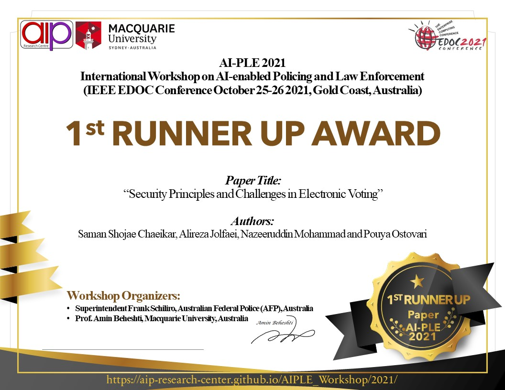

AI-PLE 2021
International Workshop on
AI-enabled Policing and Law Enforcement
IEEE EDOC Conference
October 25-26 2021, Gold Coast, Australia
Welcome
Business processes are central to the operation of public and private enterprises. Today, the advancement in Service Oriented Computing, Artificial Intelligence (AI) and Data Science has the potential to transform business processes in fundamental ways; by assisting knowledge workers in communicating analysis findings, supporting pieces of evidence and to make decisions.
The 1st International Workshop on AI-enabled Policing and Law Enforcement (AI-PLE) will be held as one of the workshops of the 25th International IEEE EDOC Conference. The AI-PLE workshop aims at providing a forum for researchers and professionals interested in Artificial Intelligence (AI) enabled Processes and Services in Law Enforcement; and in understanding, envisioning and discussing the opportunities and challenges of intelligent Process Automation, Process Data Analytics and providing Cognitive Assistants for knowledge workers in Law Enforcement. Recognizing the broad scope of the potential areas of interest, the workshop is organized into FOUR themes, as follows:
Call For Papers
Theme 1: Artificial Intelligence (AI) in Policing and Law Enforcement
- Intelligent Knowledge Lakes
- Machine Learning, Deep Learning, Natural Language Processing
- Intelligent Knowledge Representation
- Intelligent user experience
- Intelligent Crowdsourcing
- Cognitive Processes
Theme 2: BigData Analytics in Policing and Law Enforcement
- Process Data Lakes and Knowledge Lakes
- Process Data Science
- Data-Driven Processes
- Knowledge-Intensive Processes
- Process Data Engineering
- Process Data Organizations
- Process Data Curation
- Process Data Mining
- Process Data Analytics
- Process Data Visualization
- Process Data Summarization
- Storytelling with Process Data
Theme 3: Smart Entities in Policing and Law Enforcement
- Internet of Things (IoT)
- Sensor Technology and Data Analytics
- Machine-to-Machine and Human-to-Machine Communication
- Advanced Automation and Robotics (including collaborative robots)
Theme 4: Security, Privacy, and Forensics in Policing and Law Enforcement
- Security in social networks
- Security in cloud/pervasive computing
- Security-aware facial recognition
- Emerging applications of reinforcement learning for securing
- Privacy/security in Database, Web-based applications and services
- Privacy and trust
- Privacy-preserving biometrics
- Anti-forensics and analytics
- Bigdata/Cloud forensics
- Legal, Social, and Ethical Aspects of AI and Law technology, including:
- Artificial Intelligence: Legal, ethical, and policy issues
- Conceptual or model-based legal information retrieval
- Data mining applied to the legal domain
- E-government, e-democracy and e-justice
- Executable models of legislation
- Formal and computational models of legal reasoning
- Intelligent support systems for the legal domain
- Technical and legal aspects of smart contracts (blockchain technology in the legal domain)
Paper Submission Instructions
-
Position papers: 10-page limit, describing a position statement on issues related to the topics of the workshop. Position papers would lead to interesting discussions by raising key questions, controversial points of view, challenges, and ideas to address the identified issues.
-
Research papers: 10-page limit, describing original and novel research work, including research results and evaluations. The papers may present the ongoing research, novel ideas with preliminary results, advances of the state of the art, analysis of the current results in the state of the art or state of the practice, or experience in implementing the theories.
-
Industry Papers: 10-page limit, This track will be an opportunity for people associated with industry and academia to present their novel ideas while attracting funding and/or further expand collaborations. An important criterion for papers to be submitted to the Industry Track is a clear industrial association, either in the form of an extensive evaluation of research results in industrial use cases or active participation of industry representatives as co-authors.
-
Papers should should follow the IEEE Proceedings Formatting Guidelines and be submitted in PDF format. Submissions must be in English and must not exceed the above mentioned limit pages (including abstract, figures and references). Each paper must be submitted on or before the provided deadlines. Each paper will be reviewed by at least three reviewers.
-
All papers must be submitted electronically, as PDF file, to the Workshop Submission System: https://easychair.org/conferences/?conf=aiple2021
Important Dates
- Paper Abstract Deadline:
June 11, 2021 1 September 2021
- Paper Submission Deadline:
June 18, 2021 14 September 2021
- Paper Notification Deadline:
July 16, 2021 20 September 2021
- Camera-ready (and Registration) Deadline:
July 30, 2021 25 September 2021
- Workshop: October 25-26
Award and Support Program
- Best Paper Award: $500AUD
- Workshop Registration Fee Waiver: We will waive the Workshop Registration Fee for all accepted papers, thanks to our sponsors.


Workshop Organizers (Co-Chairs)
Steering Committee:
- Mr Phillip Bradley, former Commissioner of the NSW Crime Commission, Australia
- Mr Nick Cowdery, former Director of Public Prosecutions, Australia
- Dr Neil Brittliff, Microsoft, Australia
- Scientia Prof. Boualem Benatallah, UNSW Sydney, Australia
- Prof. Niloufer Selvadurai, Macquarie University, Australia
Publicity Chair:
- Dr Nour Moustafa, UNSW Canberra, Australia
Proceedings Chair:
- Dr Helia Farhood, Macquarie University, Australia
Web Chair:
- Dr Shaung Wang, Macquarie University, Australia
Workshop Program
Program Committee
Michael Sheng, Macquarie University, Australia
Uwe Aickelin, University of Melbourne, Australia
Aditya Ghose, University of Wollongong, Australia
Salil Kanhere, UNSW Sydney, Australia
Karl Roberts, WHO and Western Sydney University, Australia
Fabio Casati, Servicenow, USA
Hakim Hacid, Zayed University, UAE
Anup Kalia, IBM Research, USA
Daniel Ghezelbash, Macquarie University, Australia
Mehdi Elahi, University of Bergen, Norway
Azadeh Ghari Neiat, Deakin University, Australia
Qiang Qu, Shenzhen Institutes of Advanced Technology, China
Rita Matulionyte, Macquarie University, Australia
Hannah Harris, Macquarie University, Australia
Zoran Iliev, Australian Forensic Services, Australia
Hamid Karimi-Rouzbahani, Unversity of Cambridge, UK
Adel Serhani, UAE University, UAE
Mehrdad Zakershahrak, Arizona State University, USA
Paul Black, Federation University, Australia
Francois Charoy, Inria/Université de Lorraine, France
Marcos Baez, University of Trento, Italy
|